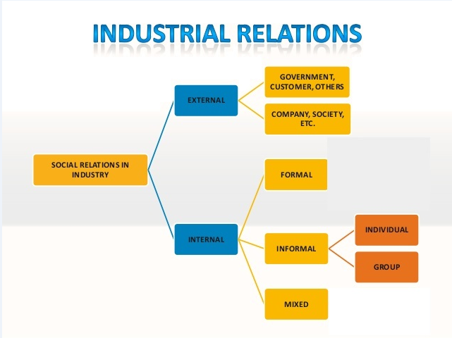

Unit-I
Industrial Sociology:
- Nature,Scope and Importance of Industrial Sociology.
- Social Relations in Industry
- Social Organisation in Industry-
- Bureaucracy
- Scientific Management
- Human Relations.
L-1
Introduction
SOCIOLOGY is science of understanding the Dynamics of group interaction and social behaviour
INDUSTRIAL from latin word industria which means dexterity and resourcefulness
DEXTERITY means anything done efficiently and smoothly
RESOURCEFULNESS employees, use of machinery, raw material in efficient manner
Industrial Sociology is particularly the study of social relationships in industry
Definition=>
W H Form-
Industrial Sociology is a substantial area of general sociology which might more accurately be termed as the sociology of work organisations or the sociology of economy.
J H Smith-
Industrial Sociology is concerned with industry as a social system including those factors which affect the structure of their functions and the changes in their system.
Scope/Importance
===================
- Social aspects of IS
- use of scientific methods
- solution to the problem of Industrial society
- scientific division of workers
- Employer-employee relations
- problems
- labour social welfare
- study of personal
- better organisation understanding
- industrial relations
- in economic planning process
- solution to problem of industrialisation and urbanisation
Industrial Relations

And a personal relationship confined one single factory
Formal relations
- Relation in account with position according to hierarchy , functional
- Exclude personal relationship
Informal relations
- Personal relation in an organisation
- Friendship, hate , factions , group
- Based on personal likes or dislikes
Mixed/socio technical relations
- Neither purely any of the above two, partly both
- Relation occur in course of their duty
- Sense of one,cooperation,
EXTERNAL RELATIONS
- relations with other industrial unit,
- Factory
- suppliers
- government and social agencies.
- contacts with educational institutes for recruitment
- org for legal coverage
- Neighbours
Psychological foundation of IS
psychologist for conducting physical and mental test
advice for condition of work,security,satisfaction,relations,inspiration.
differences wrt intelligence,interests,aptitude,etc
refer for selection and promotion.
adjusting with environment for less tension ,accidents ,fatigue.
Social Foundation of IS
- Worker and social progress
bills passed for betterment
- Labour department and welfare program
protection of rights
improvement
scientific use
cooperation
Importance
- insight to social aspects of industry
- use of scientific methods
- solutions to problems of industry
- family integration - less social evils
- scientific division of labour
- rationalisation - interference of government
- Employer Employee relations
- problem of automation - unemployment
- industrial management
- Economy planning
- Social and labour welfare
Applications of Industrial Sociology
- to understand trade union
- analyse interaction
- in recruitment training and promotions
- in research
- as a subject for students
========================================================================
L-2
The Enlightenment/Scientific Revolution
- Philosophy established that human being is center of universe,Rational thought is his feature, can think and reason,producer of knowledge.
- Develop attitude of mind
- Secular scientific and humanistic
The French Revolution 1789
- Sovereignty at the level of individual as well as national States
- Equality of citizen
- Peasants freed of bonds
- Taxes withdrawn
- Family and religion became private
- Education public
- Liberty equality fraternity
Theories
KARL MARX
- Different stages : primitive->communism->slavery->feudalism->capitalism then socialism
- Capitalism
- Humans alienated from nature,each other,fruit of labour,control of their work,themself
- Revolution will overthrow power
- Base- productive forces(labour , tech , energy) production relation (labour organisation)
- Superstructure- social cultural political religion art law
Theory Of Class Struggle
- Classify people on basis of production process
- People in same position would form a class
- Conflicts develop the struggle develop
- Small peasant thrown of their land and would force to work in new social group
- They were left with no choice
- Class struggle b/w oppressor and oppressed would be driving force
- Class consciousness and ideology development will cause revolution
EMILE DURKHEIM
- Founder of sociology as social discipline
- People form groups and follow norms and have expectation
- Like family,social institute, cricket team
- People’s acts dependent on social facts
- Social facts - external agent that constraint one behaviour due association with people like belief,feelings,collective practice
Division Of Labour
Primitive society
According to mechanical solidarity
In small population
Self sufficient groups
Similar functions
Personal relations
Not tolerant for violation
Based on repressive laws
punishment
Modern society
According to organic solidarity
In large population
Not Self sufficient groups - Interdependent
Needs different , hetro-members
dissimilar functions
Impersonal relations
tolerant for violation
Based on restitutive laws
punishment
MAX WEBER
Interpretive Society
- Interpretive understanding of social actions
- Sociologist to recover meaningful attribute by actor through empathetic understanding
- Based on empathy - feelings with it
- Placing in the position of the actor
- Social world founded on human values , feelings,ideals,prejudices
- Ideal Type-
- model of a social phenomenon that highlights most significant characters
- Corresponds to reality and analyse features,connection of social process
- Illustrate authorities - traditional,charismatic,rational-legal
BUREAUCRACY - Ideal organisation
Separate public and domestic worlds
Restrict power of official w.r.t. their responsibility
Characteristics of bureaucratic organisation
- division of work on scientific basis
- Hierarchy of position - unity of command
- rules and regulations
- Impersonal conduct - decisions based on rules
- Staffing - no employee-employer relation, only formal
- Technical competence - appointed on basis of skill
- Official records - logs of everything
Advantages -
- Rules lead to consistency and management become easy
- No conflict regarding duties and responsibility
- Selection , promotion based on merit
- Division of labour give rise to experts
- Organisation doesn't suffer from vacant post
Disadvantages -
- Too much paperwork
- No belongingness for organisation
- Rules - man = machine
- Employees resist change
========================================================================